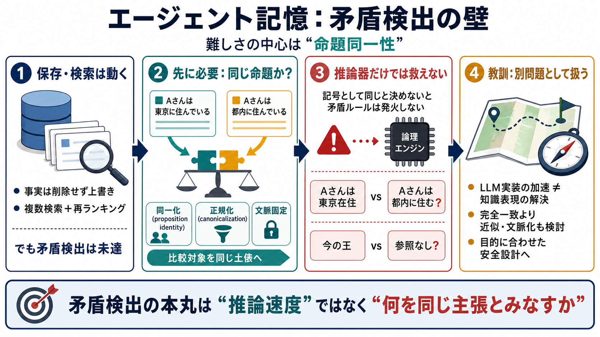

The history of knowledge representation
Knowledge representation is nowhere near a solved problem. In contrast to this fact there stand the many knowledge repre…

エージェント記憶
LLMエージェントのローカルメモリを作るとき、「矛盾する記憶を自動で見つける」は想像以上に難しい。理由の中心は命題同一性（proposition identity）にある。
“保存する”だけではない
保存・検索は出発点でしかない。次回実行で参照する「知識」として、矛盾を検出して安全性を上げたい。
作れたこと
ここまでなら、メモリ検索は“動く”。しかし本命の矛盾検出は未達のまま残る。
本質は別側
矛盾検出の難しさは、推論器の速度ではなく「比較対象を同じ土俵に載せる」こと。つまり、異なる文章が同じ命題を指しているかを先に決める必要がある。
先に詰まる
矛盾ルールが発火するのは「記号として同じ」とみなされたもの同士。どの段階で統一（シンボル化）するかが、システム知能の中心になる。
推論で救えない
命題同一性の基準は、哲学でも計算機科学でも解決されていない（長年の未解決級）。そのためASP等を強化しても、根本の判断が正しくならない可能性が高い。
矛盾前の条件
この「前段の決定」が曖昧だと、後段の矛盾判定はズレる。
自己矛盾の落とし穴
「フランスの王がハゲか？」のような自己矛盾は直感的に見えやすい。だが実務では「今の王」が存在しないなど、参照の不在も起きる。
現実の難化要因
結果として、機械的に矛盾を抽出するハードルが上がる。
方針転換
コードで魔法のように解けない。調べるべき文献は膨大だが、理解の裏付けなしに進むのは危険、という結論に近づき投稿へ切り替える。
教訓
LLMで実装を加速すること（技術）と、知識表現の根本問題（命題同一性）の解決は別物。後者は依然として難問として残る。
読むべき軸
“完全な一致”ではなく、近似（含意・類似度・文脈化）で目的関数を再設定する可能性も含めて検討する。
Knowledge representation is nowhere near a solved problem. In contrast to this fact there stand the many knowledge repre…
(Y. Yang); 0000-0001-8236-6433 (E. Curry) © 2024 Copyright for this paper by its authors. Use permitted under Creative C…
Answer Set Programming (ASP) is a declarative programming approach that captures many problems in knowledge representati…
Invited Talks: How to Make Logics Neurosymbolic Knowledge Representation in the Languages of Logic Programs under …
75. Andrea Calì, Georg Gottlob, and Andreas Pieris. Towards more expressive ontology languages: The query answering prob…